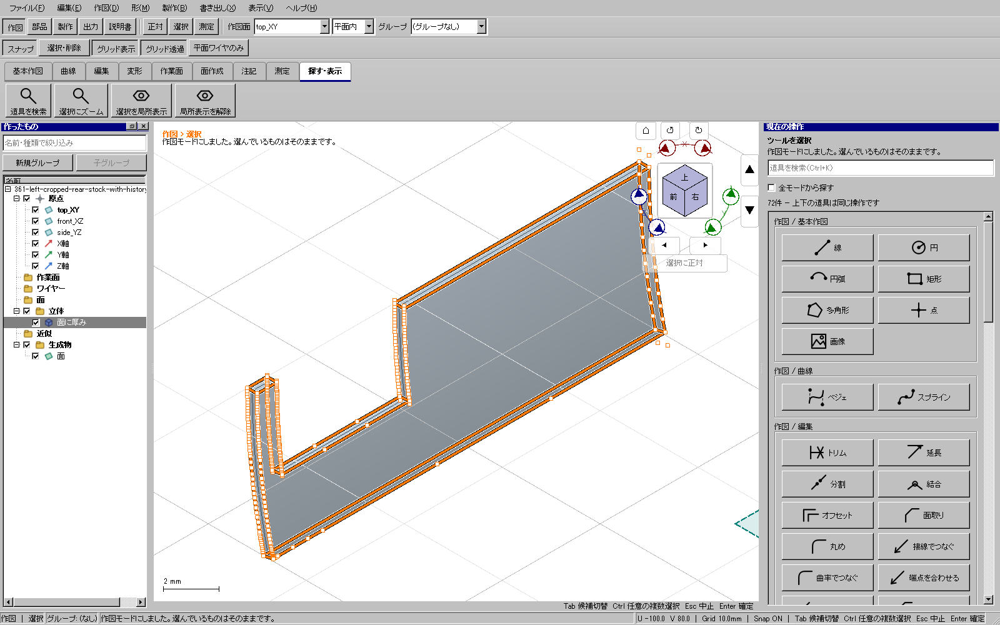

2026-11-09。WP-06の既存SurfaceRefitの非公開な支持範囲整理・偏差上限と対応回帰を限定修正。関連回帰と添付由来の実操作は成功した。全体・配布版ゲートは未実行で、今回の限定実装の所有は終了。既に公開した更新6の検証を取り消すものではない。全車体の製作と型紙は未完成。
更新6の実UI350で部品を分割して外面を取り出したが、実UI351では「面を整える」を確定できなかった。UV外接範囲の下端が−2.7499958006602656e−15、支持面の端が0で、数値的な範囲超過を実際の形状の超過と同じように拒否していた。失敗した保存入力と操作を保全した。
支持面のコピーを整理する区間だけを元の支持範囲内にする。実際のpcurve、3D境界、穴、向き、元データは動かさない。clampした境界へ模型を置き換えない。端のノット区間と次数からB-spline基底の外挿の増幅を評価し、有理曲面の分母の下限も含めて偏差を見積もる。計算誤差程度を超える範囲超過、非正の分母や不正境界は拒否する。許容差・公開API・保存形式と周期面の既存処理は維持する。
追加した端の微小な範囲超過の例は、修正前にコアと画面試験の両方で失敗した。修正後はコア20件、関連UI10件が成功。有理/非有理、2穴、回転/反転、既存ノット近傍、実際の範囲超過の拒否、周期継ぎ目と実境界誤差の既存回帰を含む。
同じ保存面を使った実UI361で、面を整える→オフセット→展開→型紙3形式→中央0.5 mm厚み→保存/Undo/Redo→独立KCD2/STEPまで成功した。制御点371→98、偏差上限は読み取り診断で約3.84885e−11 mm。連続性C1となりオフセットでき、元nativeバイト列は保持された。診断形状をCADへ読み戻して模型を作ってはいない。

証拠はout/series115-plaboard-20261105/の360-uv-roundoff-before-core.txt、360-uv-roundoff-after-core.txt、uv-roundoff-before-ui-20261109、uv-roundoff-related-surface-ui-20261109、actual-uv-roundoff-left-rear-stock-20261109、362-left-rear-topology-proof.jsonに保存。全体ゲートと公開の結果は完了後に追記する。
全体・配布版ゲート待ち。完成配布版とは表示しない。別件として、実UI358で右側の5層の接合確認が体積整合検査で停止した。入力と演算結果の独立診断を行い、所有範囲を改めて限定してから取り組む。